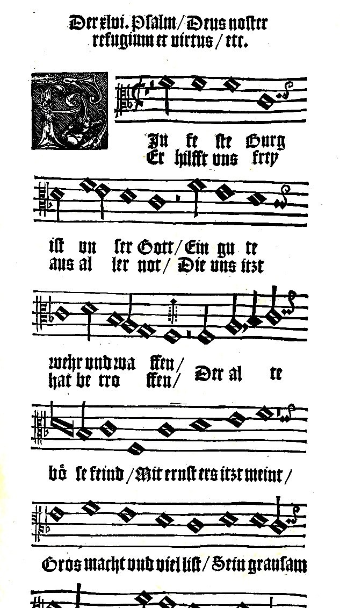

Salmo 46 — La Traducción Mister

El himno de Lutero Ein feste Burg ist unser Gott, «Castillo fuerte es nuestro Dios», impreso en un himnario de Magdeburgo bajo el encabezado «El Salmo 46», con el comienzo latino del salmo, Deus noster refugium et virtus, «Dios, nuestro refugio y fortaleza» (aquí el versículo 2). El himnario numera el salmo como el hebreo; la Biblia latina que cita lo cuenta como Salmo 45.

Notas del traductor — versículo por versículo
Uno por delante. En el hebreo el encabezado es el versículo 1, y el salmo propiamente dicho empieza en el versículo 2; las Biblias castellanas dejan el encabezado sin número, de modo que aquí cada versículo va uno por delante: «Dios es nuestro amparo» es el 46:1 en la mayoría de las Biblias castellanas y el 46:2 en el hebreo, y «Estad quietos, y conoced» es allí el 46:10 y aquí el 46:11. El Salmo 51 (ya en estas páginas) va dos por delante por la misma razón. La Douay inglesa, siguiendo al latín, numera también el encabezado como versículo 1, y cuenta el salmo como Salmo 45: «Unto the end, for the sons of Core, for the hidden».
Los hijos de Coré, sobre Alamot. «Al director. De los hijos de Coré. Sobre Alamot. Cántico»: los hijos de Coré eran una familia de cantores del templo, descendientes del Coré que se rebeló contra Moisés y a quien se tragó la tierra (Números 16:32); «los hijos de Coré no murieron» (Números 26:11, los dos ya en estas páginas), y once salmos llevan su nombre. Al alamot es una indicación musical de sentido desconocido, que vuelve en 1 Crónicas 15:20 para las arpas; alamot es el plural de almah, la joven (Isaías 7:14, ya en estas páginas), y muchos lo entienden como voces agudas. El griego leyó las mismas letras como «cosas escondidas», como en «los secretos del corazón» (Salmo 44:22), y por eso la Douay tiene «for the hidden». La RV 1909 tiene «Al Músico principal: de los hijos de Coré: Salmo sobre Alamoth»; la TNM 1987 «De los hijos de Coré sobre Las Doncellas».
Refugio y fuerza. «Dios es para nosotros refugio y fuerza, una ayuda en las angustias, que se halla de inmediato»: majsé, el lugar donde uno se mete corriendo, la palabra de «mi refugio y mi fortaleza» (Salmo 91:2, ya en estas páginas), y oz, la fuerza. Nimtsá meod, «hallada mucho», es una ayuda que está ahí cuando se la busca; la frase está en un versículo de la Biblia hebrea. Martín Lutero construyó sobre este salmo su himno Ein feste Burg ist unser Gott, «Castillo fuerte es nuestro Dios», a finales de la década de 1520, y la página que aquí se muestra, de un himnario de Magdeburgo de 1545, lo imprime bajo el encabezado «El Salmo 46, Deus noster refugium et virtus». La RV60 tiene «Dios es nuestro amparo y fortaleza, Nuestro pronto auxilio en las tribulaciones»; la TNM 1987 «una ayuda que puede hallarse prontamente durante angustias»; la NVI «nuestra segura ayuda en momentos de angustia».
Aunque los montes se tambaleen. «Por eso no temeremos, aunque la tierra cambie, y aunque los montes se tambaleen en el corazón de los mares»: mot, tambalearse, es el verbo que el salmo no deja de dar vueltas. Aquí se tambalean los montes; en el versículo 6 la ciudad de Dios «no se tambaleará»; en el versículo 7 se tambalearon los reinos. La traducción mantiene una sola palabra las tres veces. «El corazón de los mares» es el lugar del cántico del mar, «los abismos se cuajaron en el corazón del mar» (Éxodo 15:8, ya en estas páginas). La TNM 1987 tiene «aunque la tierra sufra cambio y aunque las montañas caigan tambaleantes en el corazón del vasto mar»; la RV60 «aunque la tierra sea removida»; la NVI «aunque se desmorone la tierra».
Las aguas braman. «Aunque bramen y espumen sus aguas, aunque tiemblen los montes por su crecida»: yehemú, bramar, es también el verbo del versículo 7, «bramaron las naciones»: el mar y las naciones hacen el mismo ruido. Gaavá, «crecida», es también la palabra del orgullo. La RV60 tiene «Aunque bramen y se turben sus aguas, Y tiemblen los montes a causa de su braveza»; la TNM 1987 «aunque sus aguas estén bulliciosas, espumen en exceso»; la NVI «aunque rujan y se encrespen sus aguas».
Selah. El versículo termina con selah, una palabra cuyo sentido no se conoce. Está en setenta y cuatro versículos de la Biblia hebrea, setenta y uno en los Salmos y tres en la oración de Habacuc; el griego la vierte diapsalma, un interludio, y se la suele tomar por una indicación a los músicos, una pausa o una subida de la voz. Aparece tres veces en este salmo, tras los versículos 4, 8 y 12. El estribillo de los versículos 8 y 12 no está tras el versículo 4, donde está el primer Selah, y muchos lectores han sospechado que alguna vez estuvo; el hebreo no lo tiene ahí. La TNM 1987 imprime «Sélah»; la Douay inglesa, desde el latín, la omite.
Un río. «Un río: sus corrientes alegran la ciudad de Dios»: Jerusalén no tiene río, solo el manantial de Guihón. El río es el que «sale del Edén para regar el huerto» (Génesis 2:10, ya en estas páginas), visto otra vez en Apocalipsis como «un río de agua de vida … que salía del trono de Dios» (Apocalipsis 22:1, ya en estas páginas). Pelagav, «sus corrientes», son canales abiertos para el agua; la forma está en un versículo de la Biblia hebrea. «La más santa de las moradas del Altísimo»: el griego leyó un verbo, «el Altísimo ha santificado su morada», y la Douay lo sigue: «the most High hath sanctified his own tabernacle». La RV60 tiene «Del río sus corrientes alegran la ciudad de Dios»; la TNM 1987 «el santísimo [y] magnífico tabernáculo del Altísimo».
Al rayar el alba. «Dios está en medio de ella; no se tambaleará. Dios la ayudará al rayar el alba»: lifnot boqer, «al volverse la mañana», y la frase está en dos versículos de la Biblia hebrea, aquí y en el mar, cuando «al rayar el alba el mar volvió a su cauce permanente» (Éxodo 14:27, ya en estas páginas). El encabezado de la Ginebra inglesa lee el salmo como «A song of triumph or thanksgiving for the deliverance of Jerusalem, after Sennacherib with his army was driven away», cuyo ejército amaneció muerto (2 Reyes 19:35); el salmo mismo no nombra ninguna ocasión. La RV60 tiene «Dios la ayudará al clarear la mañana»; la TNM 1987 «Dios la ayudará al despuntar la mañana».
Dio su voz. «Bramaron las naciones, se tambalearon los reinos; él dio su voz, la tierra se derrite»: el bramido del versículo 4 y el tambaleo del versículo 3 pertenecen ahora a las naciones, y un solo sonido de Dios las deshace. Tamug, «se derrite», es de mug, el verbo de los corazones que se derriten de miedo; «la tierra se derrite» está en un versículo de la Biblia hebrea. La RV60 tiene «Bramaron las naciones, titubearon los reinos; Dio él su voz, se derritió la tierra»; la TNM 1987 «Las naciones se hicieron bulliciosas, los reinos tambalearon»; la NVI «la tierra se derrumba».
Con nosotros. «Jehová de los ejércitos está con nosotros; altura segura para nosotros es el Dios de Jacob»: imanu, «con nosotros», la palabra que está dentro del nombre Emanuel, «Dios con nosotros» (Isaías 7:14; Mateo 1:23, los dos ya en estas páginas). El estribillo está en dos versículos de la Biblia hebrea, los versículos 8 y 12 de este salmo. Misgav es un lugar alto fuera de alcance, un refugio por la altura más que por los muros. La TNM 1987 tiene «el Dios de Jacob es altura segura para nosotros»; la RV60 «Nuestro refugio es el Dios de Jacob»; la RV 1909 «Jehová de los ejércitos es con nosotros».
Asolamientos. «Vengan, vean las obras de Jehová, que ha puesto asolamientos en la tierra»: shamot, ruinas que dejan horrorizado al que las mira. El griego y el latín leyeron una palabra de asombro, «maravillas», y la Douay tiene «what wonders he hath done upon earth». El asolamiento es el de la guerra misma, como muestra el versículo siguiente. La RV60 tiene «Venid, ved las obras de Jehová, Que ha puesto asolamientos en la tierra»; la TNM 1987 «como ha establecido acontecimientos pasmosos en la tierra»; la NVI «él ha traído ruina sobre la tierra».
El arco, la lanza, las carretas. «Que hace cesar las guerras hasta el extremo de la tierra; quiebra el arco y corta la lanza; quema las carretas en el fuego»: agalot son carros y carretas, la palabra de las carretas que José envió por su padre (Génesis 45:19) y del carro nuevo que llevó el arca a casa (1 Samuel 6:7, los dos ya en estas páginas). El griego leyó una palabra con una vocal distinta, «escudos redondos», y por eso la NIV inglesa tiene «he burns the shields with fire» y la Douay «the shield he shall burn in the fire». La RV60 tiene «Y quema los carros en el fuego»; la TNM 1987 «quema los carruajes en el fuego».
Suelten. «Suelten, y sepan que yo soy Dios»: harpú, de rafá, aflojarse; en esta forma es soltar algo que se tenía agarrado. Es el verbo del «Suéltame, para que los aniquile» de Jehová a Moisés (Deuteronomio 9:14) y del «Detente» de Samuel a Saúl (1 Samuel 15:16, los dos ya en estas páginas). Dicho aquí después de quebrado el arco y quemadas las carretas, va dirigido primero a las naciones en guerra: suelten las armas, y sepan quién es Dios. El «Estad quietos» del estante antiguo se ha vuelto una de las líneas más amadas de la devoción; es fiel al verbo, que es de detenerse, aunque el hebreo no habla de silencio. El griego tiene scholasate, «tómense un descanso». La RV60 tiene «Estad quietos, y conoced que yo soy Dios»; la TNM 1987 «Cedan, y sepan que yo soy Dios»; la NVI «Quédense quietos, reconozcan que yo soy Dios».
Exaltado entre las naciones. «Seré exaltado entre las naciones, seré exaltado en la tierra»: las naciones que bramaron en el versículo 7 y la tierra que se derritió terminan honrando al que detuvo sus guerras. El salmo cierra con su estribillo, «Jehová de los ejércitos está con nosotros», y con el tercer Selah. La RV60 tiene «Seré exaltado entre las naciones»; la RV 1909 «Ensalzado he de ser entre las gentes»; la TNM 1987 «ciertamente seré ensalzado en la tierra».
Patrones que conviene seguir
Donde esta traducción mantiene las palabras exactas y distintas: la numeración hebrea, con el encabezado como versículo 1, como en el Salmo 51; «refugio» para majsé, como en el Salmo 91:2; «tambalearse» para mot en los versículos 3, 6 y 7 por igual; «bramar» para hamá en los versículos 4 y 7; «al rayar el alba», como en Éxodo 14:27; «con nosotros» para imanu; «altura segura» para misgav; «carretas» para agalot; y «suelten» para harpú, como en Deuteronomio 9:14.
Ecos pagados. El refugio del Salmo 91; el corazón del mar de Éxodo 15 y el alba de Éxodo 14; el río del Edén; el Emanuel de Isaías 7; los hijos de Coré que no murieron (Números 26); y el «suéltame» de Deuteronomio 9.
Ecos sembrados. La ciudad de Dios y sus torres (Salmo 48); los otros salmos de los hijos de Coré (Salmos 42, 44–49, 84–85 y 87–88); y el río que sale del templo (Ezequiel 47). Ninguno está todavía en estas páginas.
⚠ Nota sobre el orden: los Salmos están en estas páginas en el 1, 23, 27, 34, 37, 46, 51, 91, 103, 121 y 139, elegidos por lo mucho que se leen y no en orden. El hilo secuencial sigue igual: lo siguiente en orden es el Salmo 2.